Beginner CI/CD Projects
This project demonstrates how to create an AWS CodeBuild project that automatically applies a Terraform script whenever we commit changes in the GitHub repository. It also demonstrates how to create a CodeBuild project that automatically builds any Docker image and push it to the Docker Hub repository.
Project Code on GitHub: TerraformProject Code on GitHub: Docker

Step 1: Getting Set Up
This project requires some installations and tools, so to begin, we will set up some things on our local computer.1. Create an IAM user with a programmatic access key.
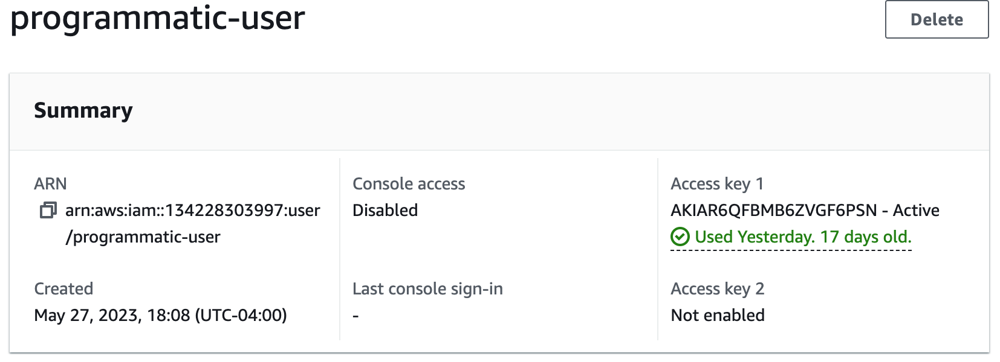
2. Create a repository in GitHub that will store our code.
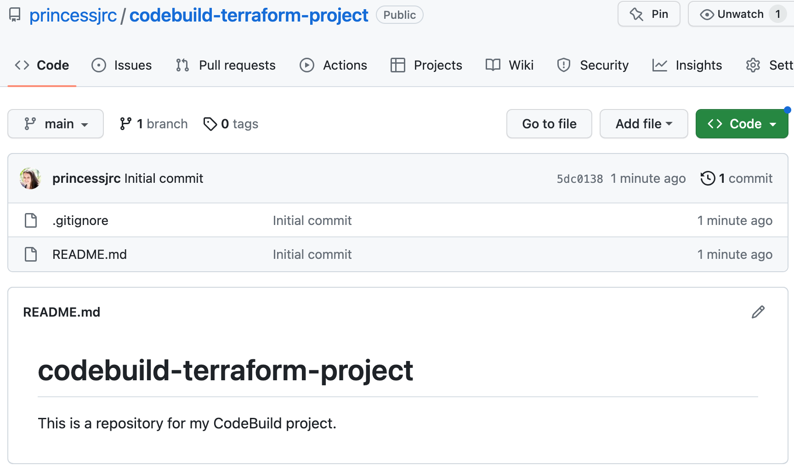
3. Clone the repository to our computer. This will create a local copy of our remote Git repository.
git clone < ssh clone url >
4. Create a personal access token in GitHub. The build job we create will use this token to authenticate with our GitHub Account.
Click Settings, then Developer settings, then Personal access tokens in GitHub.
Step 2: Automatically Apply Terraform With AWS CodeBuild
CodeBuild is a managed build service by AWS. It automates code compilation, building, and testing. We will create an AWS CodeBuild project that automatically applies a Terraform script whenever we commit changes in our GitHub repository.1. Add our Terraform code to our GitHub repository. 2. Create shell scripts.
When creating a CodeBuild project, CodeBuild will launch a container that it will use for our build job. We will create shell scripts for the things we want to install on the container. We will:
a. Install Terraform
b. Configure a profile
c. Run the Terraform command
3. Create a buildspec.yml file for our CodeBuild job. This file is a collection of build commands and related settings in YAML format that CodeBuild will use to run the build job.
version: 0.2
phases:
install:
runtime-versions:
python: 3.x
pre_build:
commands:
- cd cicd # change directory
- chmod +x install-terraform.sh configure-named-profile.sh apply-terraform.sh # make files executable
- ./install-terraform.sh # install terraform
- ./configure-named-profile.sh # configure named profile
build:
commands:
- ./apply-terraform.sh
Buildspec Documentation
4. Create an S3 bucket to store the Terraform state. It will be used to track and manage changes to our infrastructure.
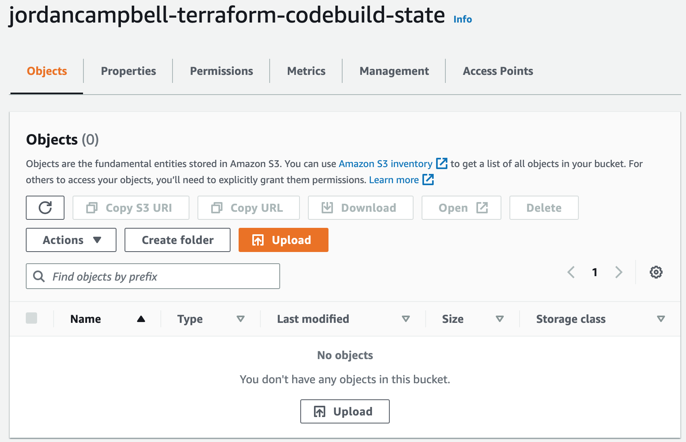
5. Create a project in CodeBuild that will automatically apply our Terraform script anytime we make a commit into our GitHub repository.
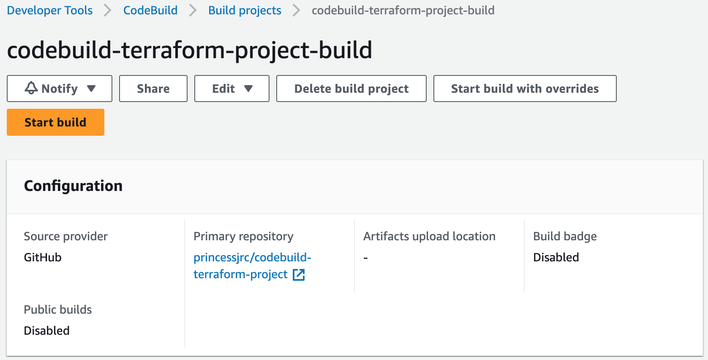
6. Start build.
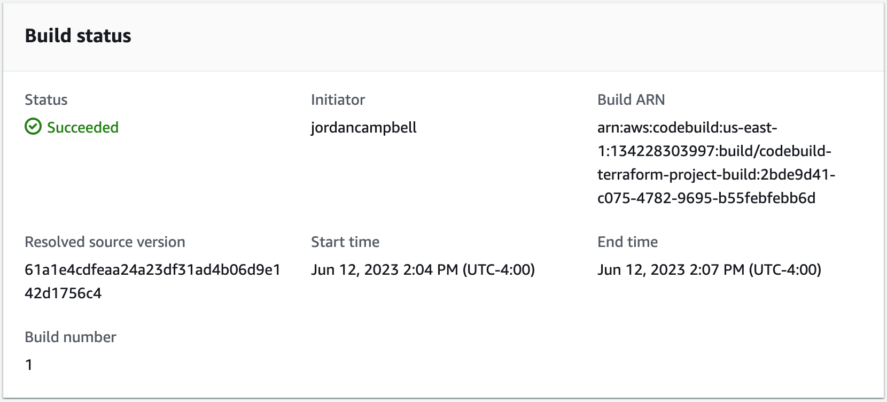
Our build was successful and our application is accessible.
7. Clean up our environment. We will destroy the resources we created with Terraform using CodeBuild by changing our run command from 'apply' to 'destroy'.
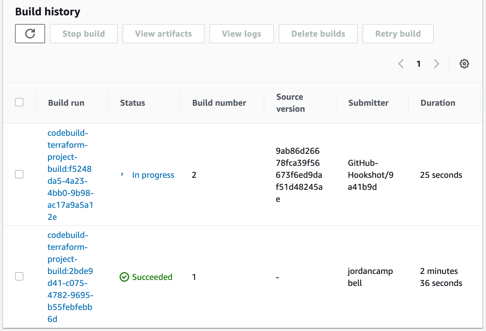
Our destroy was successful.
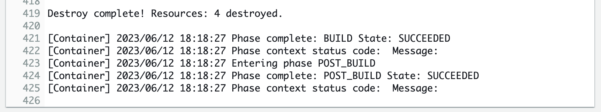
Step 3: Build a Docker Image and Push it to Docker Hub
In this section we will learn how to create a CodeBuild project that automatically builds any Docker image and pushes it to the Docker Hub repository.1. Create a repository in Docker Hub. This is the repository our CodeBuild job will push the image to once it has built it.
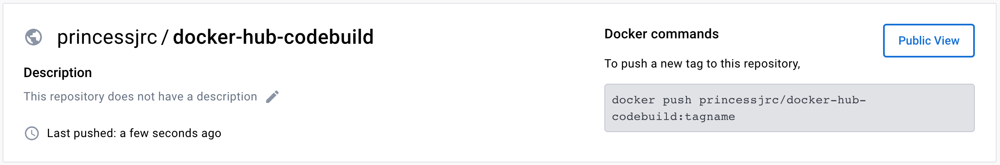
2. Create a GitHub repository to store our code.
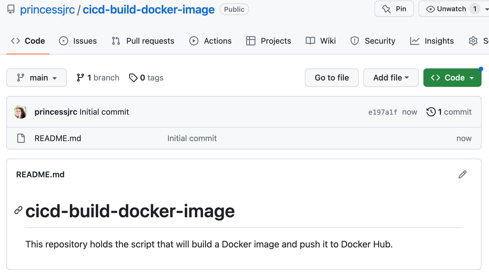
3. Clone the repository to our computer. This will create a local copy of our remote Git repository.
git clone < ssh clone url >
4. Create the Dockerfile CodeBuild will use to build our Docker image.Dockerfile
[Watch this video to learn how to create the Dockerfile: https://www.youtube.com/watch?v=4pRo6Ud1JI8&t]
5. Create the shell script files that CodeBuild will use to build the Docker image and push it to Docker Hub.
a. Build the image
b. Push the image
[Lecture where we manually built the Docker image:
Video 1: https://www.youtube.com/watch?v=uEfUxFnlxgM&t
Video 2: https://www.youtube.com/watch?v=eEU6gae494Y&t]
6. Create a buildspec.yml file for our CodeBuild job. This file is a collection of build commands and related settings in YAML format that CodeBuild will use to run the build job.
version: 0.2
phases:
install:
runtime-versions:
python: 3.x
pre_build:
commands:
- chmod +x build-image.sh push-image.sh
- ./build-image.sh
build:
commands:
- ./push-image.sh
7. Create the project in CodeBuild.
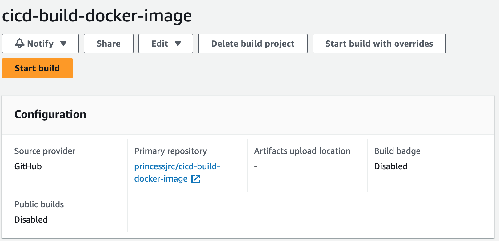
8. Start the build.
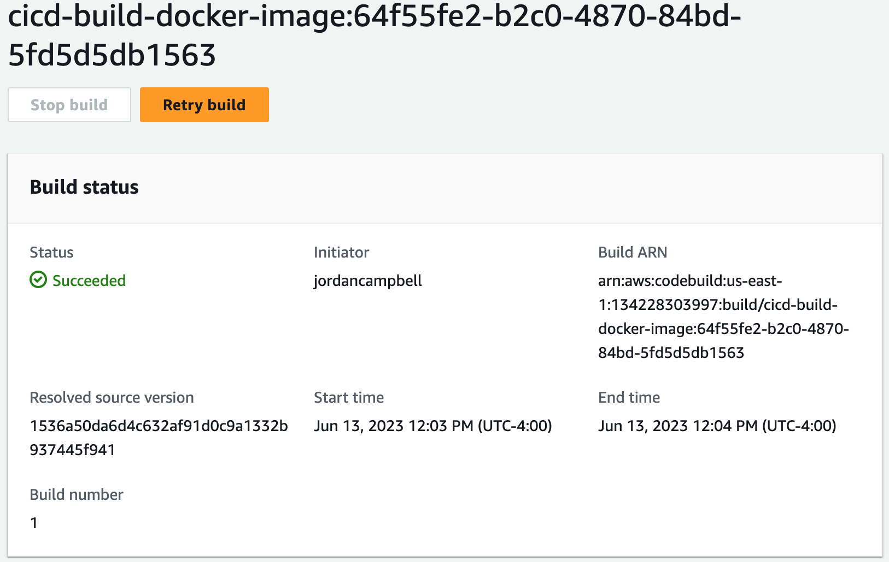
Build was successful and image was pushed to Docker Hub.
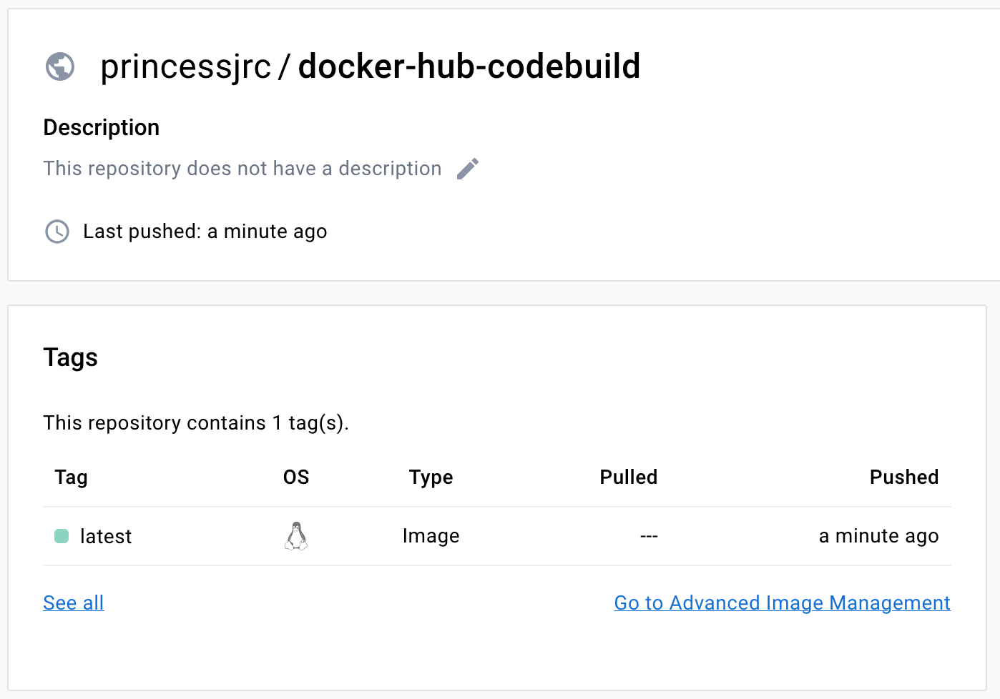
9. We will use the build project we just created to build another Docker image and push it to Docker Hub. First, create another Dockerfile.
Dockerfile 2
10. Start build with overrides. Update our environment variables and start build.
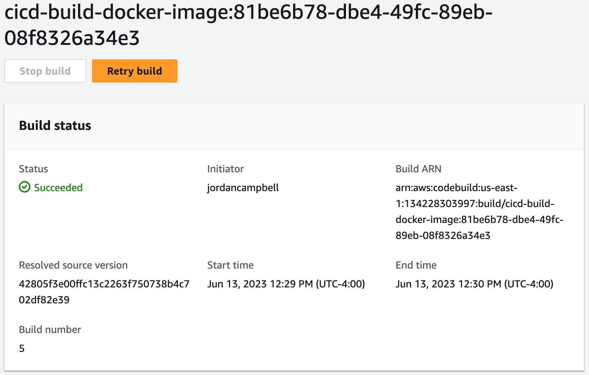
Build was successful and image was pushed to Docker Hub.
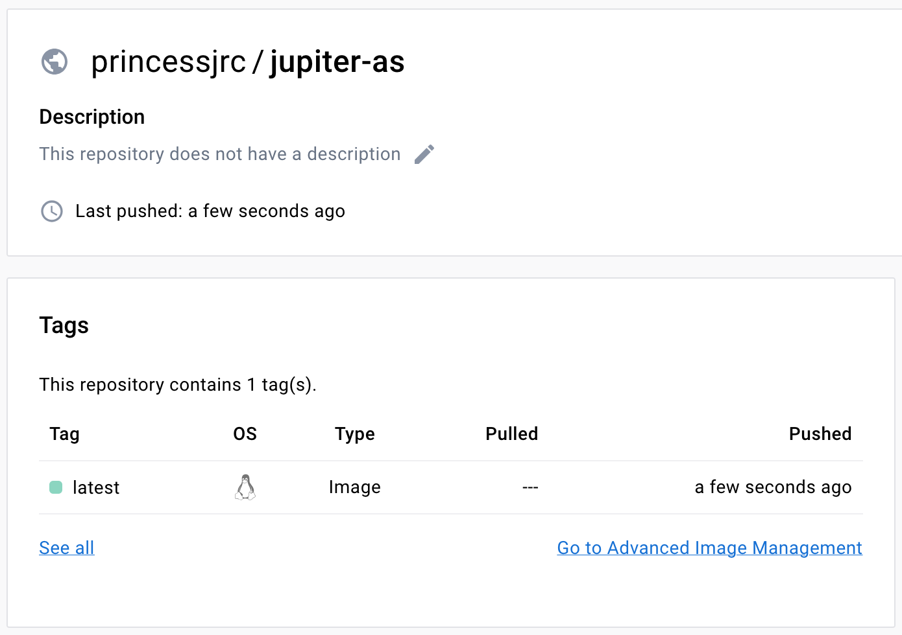
Step 4: Clean Up Resources
We will now clean up the resources we used in this project by deleting our CodeBuild projects.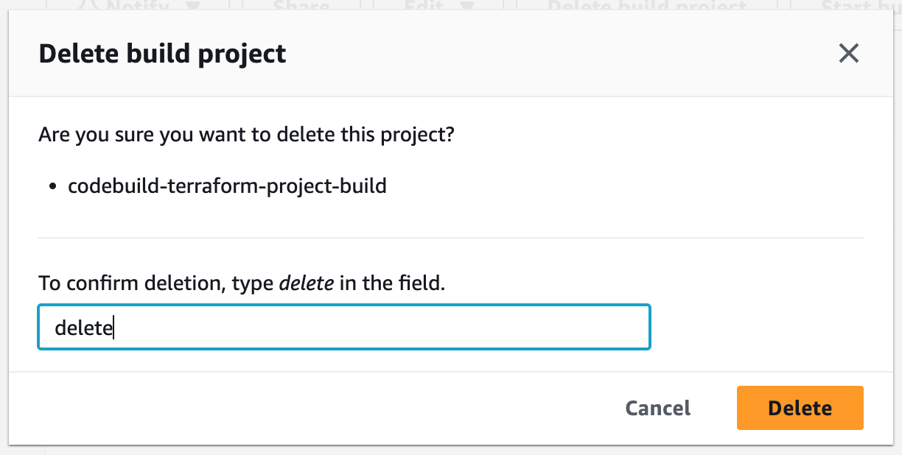